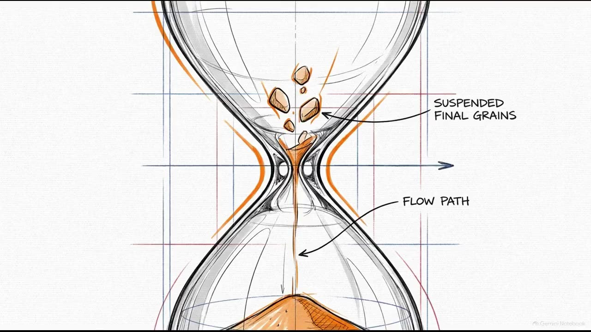
1 · Capacity is limited
A narrow door, a small workbench, shortcuts in judgement, fixation in problem solving and the time pressure in Zhi et al.
12345678
This course is not eight separate topics. It is one journey in eight stops. Information gets in, is held, is stored, is organised, is pictured, is used and is turned into something new. At the end, a machine holds up a mirror. Read the story once before you study, and every detail will have a place to land.
Tap a stop to jump to it. Each stop only makes sense because of the one before it.
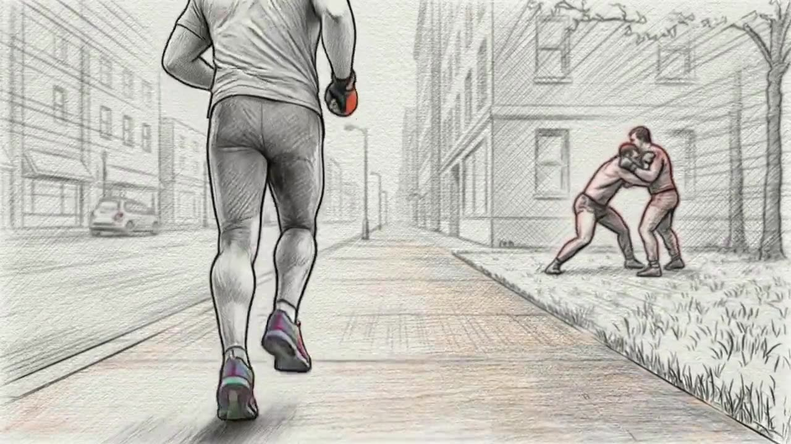
What gets in, and what never does?
Nothing reaches your mind unless attention lets it in, so the journey starts at the door. The lesson is a humbling one: people miss a gorilla walking through a basketball game, a fight they run right past, a change in front of their eyes. And most people are sure they would have noticed.
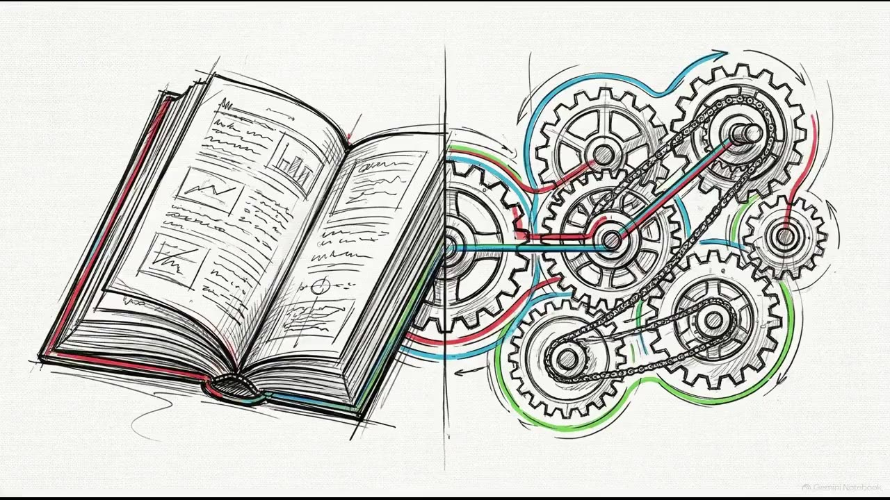
Where do you hold things while you think?
What gets through the door lands on a small workbench. First we look at the older idea of short-term memory as one box (Atkinson and Shiffrin). Then Baddeley shows the bench has separate parts: a loop for sounds, a sketchpad for images, a supervisor that directs the work and a buffer that links it all together.
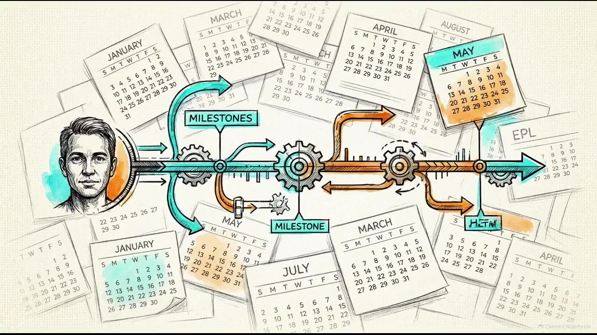
How do you store the story of your own life?
Some of what you work with is kept, and the most personal store is your own life story. You remember it unevenly: almost nothing before age three, a bump in your teens and twenties. Your goals and identity shape what comes back. Amnesia shows what happens when storing breaks, and even taking a photo changes what you remember.
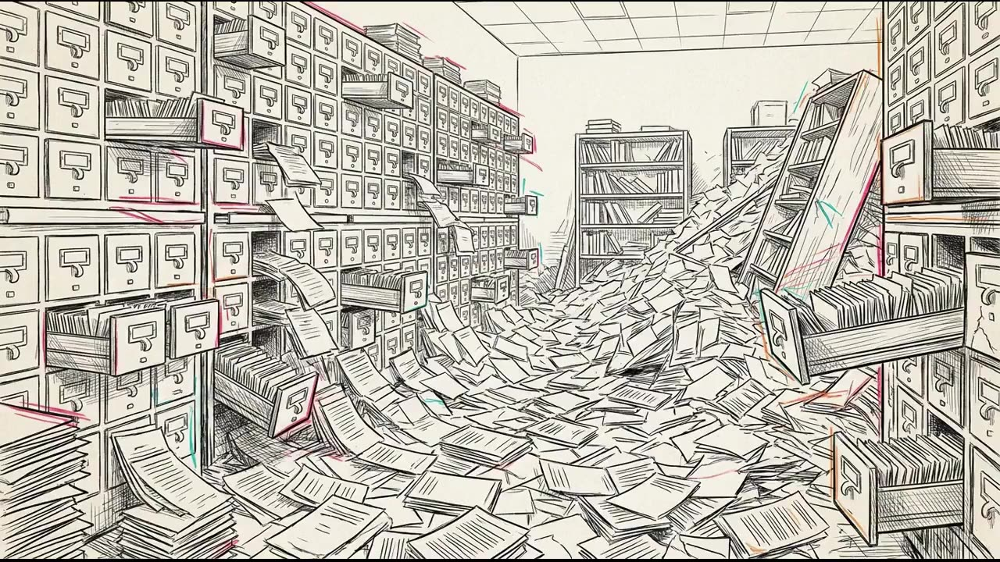
How is all that knowledge organised?
An archive full of single memories would be useless without a way to sort it. Categories have no neat definitions: a robin is a "better" bird than a penguin. Concepts are wired together in a network where activation spreads. And when the network falls apart in semantic dementia, a duck gets drawn with four legs.
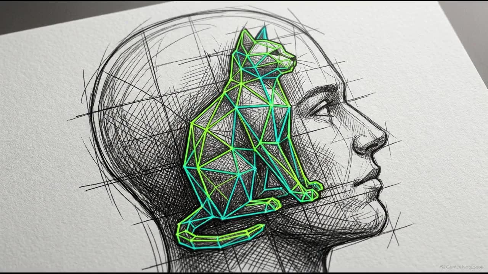
Is knowledge stored as pictures or as descriptions?
Once we know knowledge is organised, the next question is its form. Rotating a shape in your mind takes longer the further you turn it, and scanning a mental map takes longer for longer distances: that looks like pictures. The propositional view says it is language-like underneath. And bizarre images have their own, measurable memory effects.
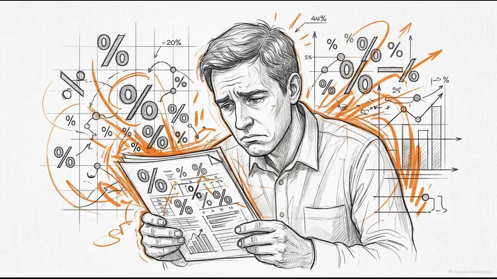
How do real people judge and choose?
Now the mind has a door, a bench, an archive and organised knowledge, so it is time to use them. Everything before catches up with you here. A narrow door and a small bench mean you take shortcuts. Rebuilt memory means what comes to mind easily feels more likely. Categories make you judge by how typical something looks.
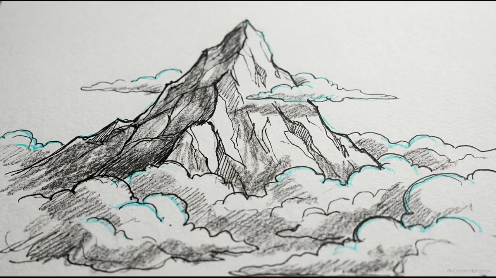
How do you make an option that does not exist yet?
Deciding means choosing between options that already exist. Problem solving and creativity mean making a new one. This is the highest level of thinking in the course, and it uses everything before it: the bench to hold the problem, knowledge to borrow analogies from, and attention to keep old, stuck ideas from blocking new ones.
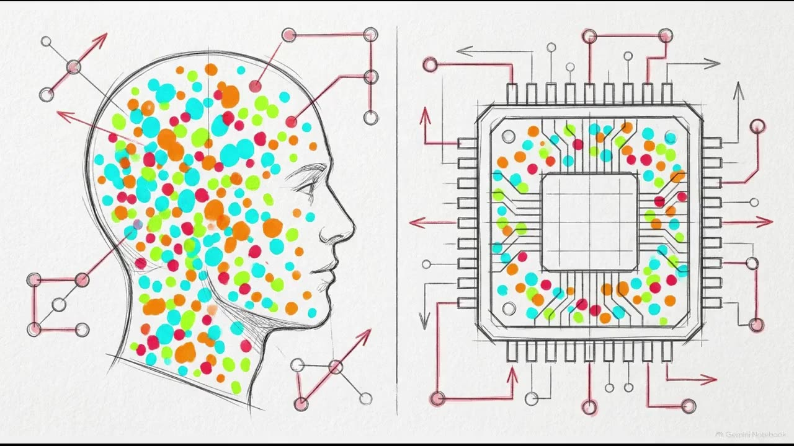
What does a machine that seems to think teach us about our own minds?
We end with a machine that seems to do everything we studied: it attends, holds context, stores knowledge, judges and creates. That is why it comes last. You can only ask whether an AI "thinks" once you know what thinking involves. And the question turns back on us: what happens to our thinking when we lean on it?
The same three ideas keep coming back. The dots show the themes where each one matters most.

A narrow door, a small workbench, shortcuts in judgement, fixation in problem solving and the time pressure in Zhi et al.
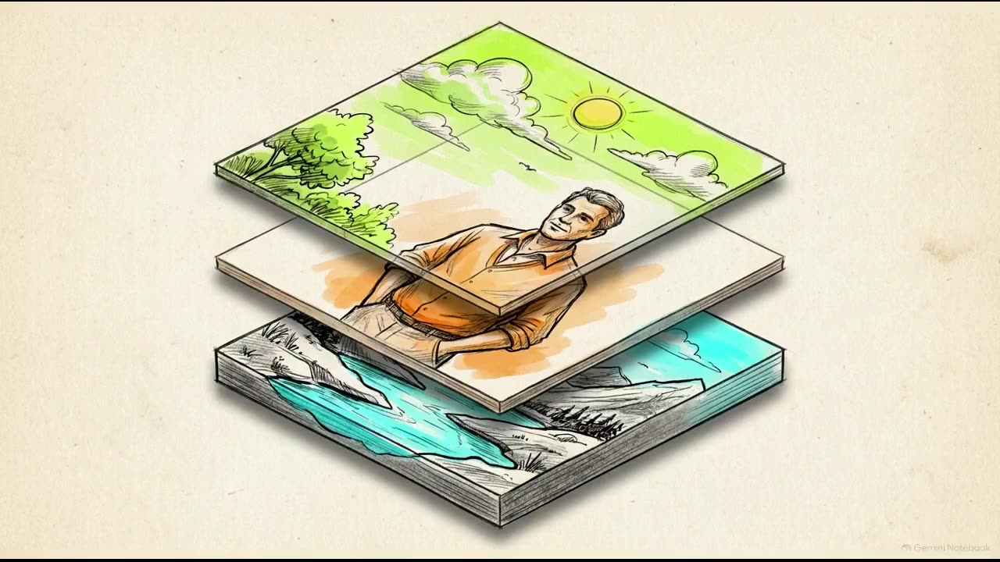
Rebuilt memories, categories judged by typicality, images you generate and decisions shaped by how they are framed.
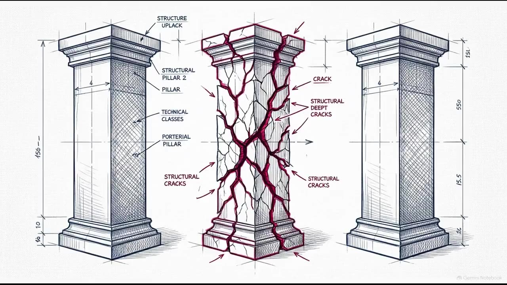
Inattentional blindness, amnesia, semantic dementia and biases: the course keeps learning from what goes wrong.
The world gets in (1), is held (2), is stored as your life (3), is organised (4) and pictured (5), is used to decide (6) and to create (7), and is finally reflected back at us by a machine (8).
🪝 Door, bench, archive, files, pictures, choices, inventions, mirror.Exam tip: when a question seems to come from nowhere, ask which stop on the journey it is about, and which thread it is testing.